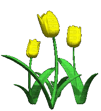
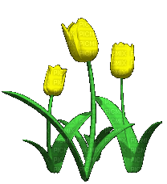

Renuncio a lo que nunca fue
Cada domingo que te veo, mis sentimientos se desbordan, anhelo un abrazo que no debo dar. Renuncio a la cercanía, a la esperanza de que seas mi universo. Aunque me duele, sé que un día serás solo un recuerdo. No fuimos lo que hubiera querido, pero me alejo con la tranquilidad de haber hecho lo correcto.
La Belleza que Eres
Tu belleza es como un amanecer que ilumina el mundo. Tus ojos brillan con sabiduría, y tu sonrisa transforma hasta los días más grises. Pero lo más hermoso es lo que no se ve: en tus imperfecciones está lo que te hace única y especial. Eres perfecta a tu manera, porque aceptas quién eres, y eso te distingue de los demás. Tu presencia se siente como una brisa cálida que reconforta, y tu autenticidad te hace inolvidable.
Despedida sin retorno
Hubiera querido que lo que siento fuera recíproco, pero no siempre las cosas suceden como deseamos. Me despido, aunque no quiero. Desearía quedarme a tu lado, pero sé que debo alejarme. Esto es lo último que dejo: el rastro de alguien que te amó sin medida, pero nunca fue correspondido.
Eres la estrella más brillante
Desde que te conocí, no has salido de mi mente. Te has vuelto una constante, alguien importante para mí, aunque no lo demuestre. Eres la estrella más brillante entre millones, y te elegiría una y un millón de veces. Aunque no seas mi enamorada, tu imperfección te hace perfecta y única. Siempre te elegiría, porque eres alguien que, sin querer, deja una huella profunda.
La Belleza que Eres
Tu belleza es como un amanecer que ilumina el mundo. Tus ojos brillan con sabiduría, y tu sonrisa transforma hasta los días más grises. Pero lo más hermoso es lo que no se ve: en tus imperfecciones está lo que te hace única y especial. Eres perfecta a tu manera, porque aceptas quién eres, y eso te distingue de los demás. Tu presencia se siente como una brisa cálida que reconforta, y tu autenticidad te hace inolvidable.
Despedida sin retorno
Hubiera querido que lo que siento fuera recíproco, pero no siempre las cosas suceden como deseamos. Me despido, aunque no quiero. Desearía quedarme a tu lado, pero sé que debo alejarme. Esto es lo último que dejo: el rastro de alguien que te amó sin medida, pero nunca fue correspondido.
Eres la estrella más brillante
Desde que te conocí, no has salido de mi mente. Te has vuelto una constante, alguien importante para mí, aunque no lo demuestre. Eres la estrella más brillante entre millones, y te elegiría una y un millón de veces. Aunque no seas mi enamorada, tu imperfección te hace perfecta y única. Siempre te elegiría, porque eres alguien que, sin querer, deja una huella profunda.
 
